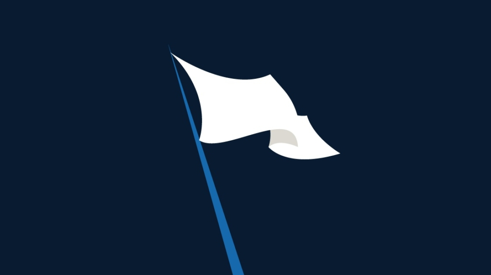

CTF (Capture The Flag) is a kind of information security competition that challenges contestants to solve a variety of tasks ranging from a scavenger hunt on wikipedia to basic programming exercises, to hacking your way into a server to steal data.